Movable Keys
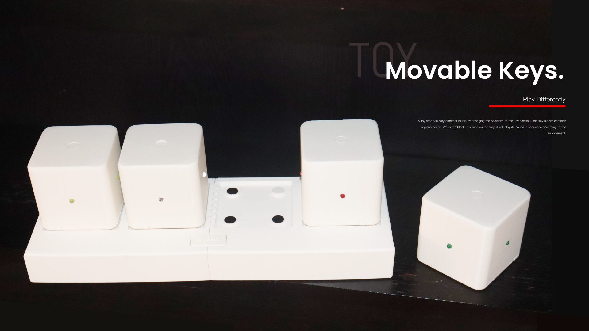
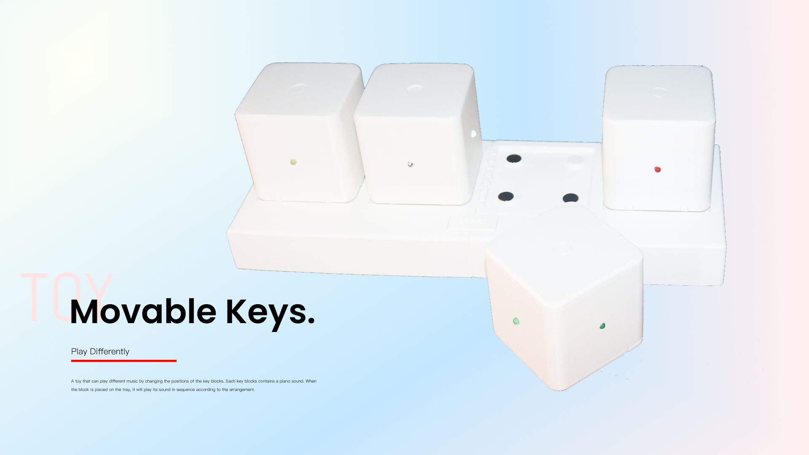
Insight: I always find it difficult to remember the position of each key, so I want to design a toy that allows me to play by arranging the keys. This would give me a greater sense of space while playing music.
Idea: A toy that can play different music by changing the positions of the key blocks. Each key blocks contains a piano sound. When the block is placed on the tray, it will play its sound in sequence according to the arrangement.
Code logic
1. After pressing the plate's start button, the key blocks will play the audio sequentially according to their positions. Each key slot on the plate is attached with a different number of magnets (for example, the first position has one magnet, the second position has two magnets, and so on). When the button on the plate is pressed, the connected ESP board sends information to each ESP board, signaling the start of the overall response. Each piano key block has four hall effect sensors, which can sense the number of magnets and thus determine its position on the tray. For each subsequent position, the audio playback is delayed by 1 second (for example, the first piano key block plays the audio immediately, while the second piano key block waits for one second before playing the audio).
2. Each piano key block stores different audio files in the DFPlayer. When the button on the key block is pressed, the corresponding audio of that key block will play.
3. Each time an audio is played, the LEDs and other indicators will light up.
PCB
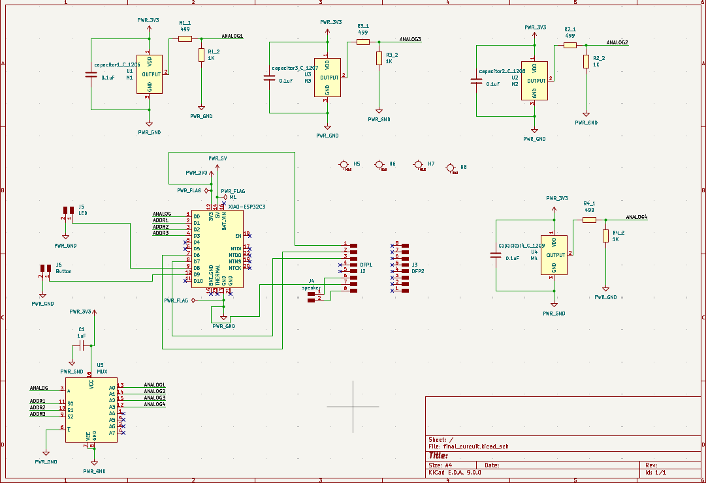
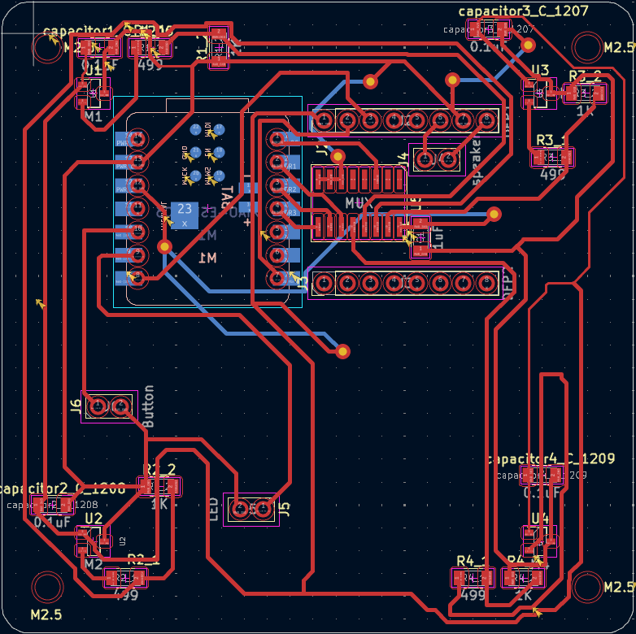
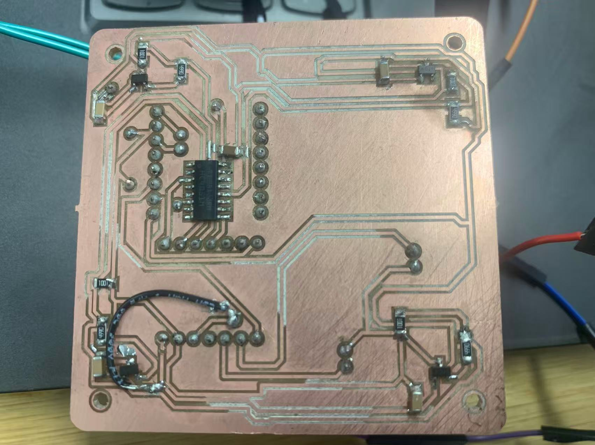
File
FreeCAD file of all these design.
circuit of the box pcb board.
Code that sending message (press button to start part).
Code that receiving message(music box part).

Process
01 Battery Block
Material: a XIAO ESP32C3 board, a battery switch, two electrode metal plates(2mm), a battery.
Sketch:
Block: 80mm*80mm*80mm (5mm thick)
Battery:42.4mm*14mm*14mm (battery box: 2.5mm thick)


FreeCAD file.
-
try some button shapes
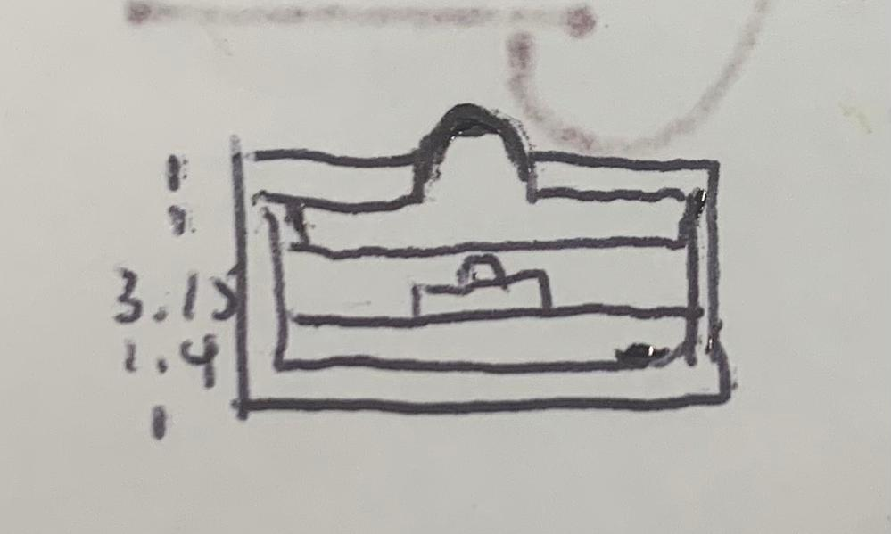
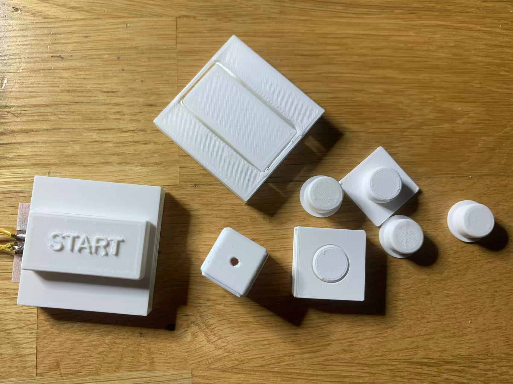
try some box shapes
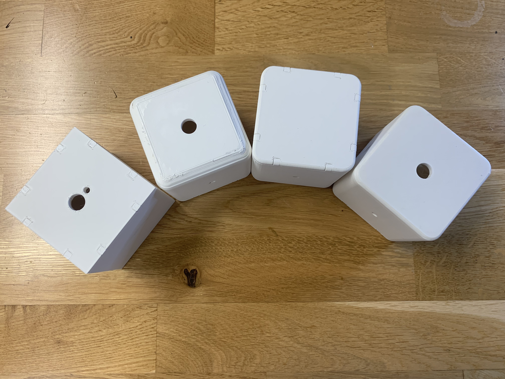
02 connect ESP32C3 with DFPlayer
Material: a XIAO ESP32C3 board, a DFPlayer Mini(DFP0299), a speaker.
Sketch: Here is the basic connection I get from here.

Code that simplified to match the ESP32C3 board.
Example code that play the music.
03 Curcuit
Outside: A led light, a button, a battery button
Inside: A ESP32C3, a DFPlayer Mini(DFP0299), a Multiplexer(CD74HC4051M96), four capacitors, a speaker,.
I put the ESP and DFPlayer at the back of the PCB board, I also dig four holes and plan to use screws to secure the PCB board inside the key block (this way, I only need to glue the screws inside the keys, while keeping the PCB board removable).


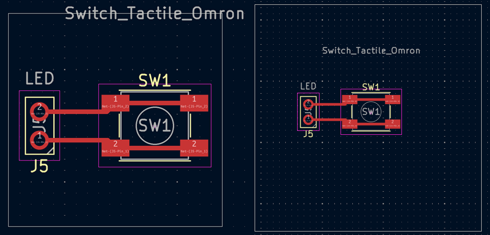
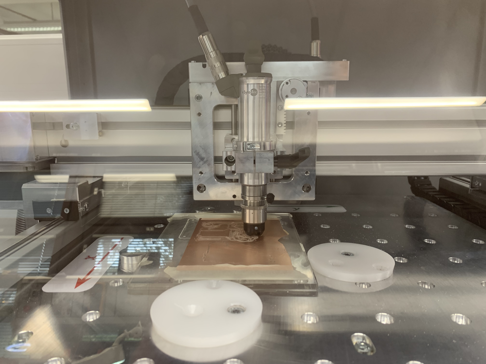
04 PCB prototypes


Main code that implements the functionality of determining the delay in seconds before playing music based on the number of magnets; the more magnets, the longer the delay.
Code that implements the functionality of determining the audio delay time based on detecting the number of magnets.
Code that is an example of using a Multiplexer (CD74HC4051M96) to expand the analogRead pin ports..
-
Then I add the button in the plate, so that when press the button, the blocks start to figure out the turn and speak the sound.
Then I add LED and button on the board, so when I press the button, it will play the sound of this box, and every time it play sound, the LED light will bright.

Code that sending message (press button to start part).
Code that receiving message(music box part).
-
Because it was found that the positive and negative terminals of the battery connected to the ESP board were connected to 3.3V, the original circuit was cut off from the 5V line and reconnected to 3.3V.
Then I change the button with the button PCB board, and change the LED to 3 LEDs in series. And add LED on ESP32C3 board's GND and 3.3v pin to observe the battery power supply status.
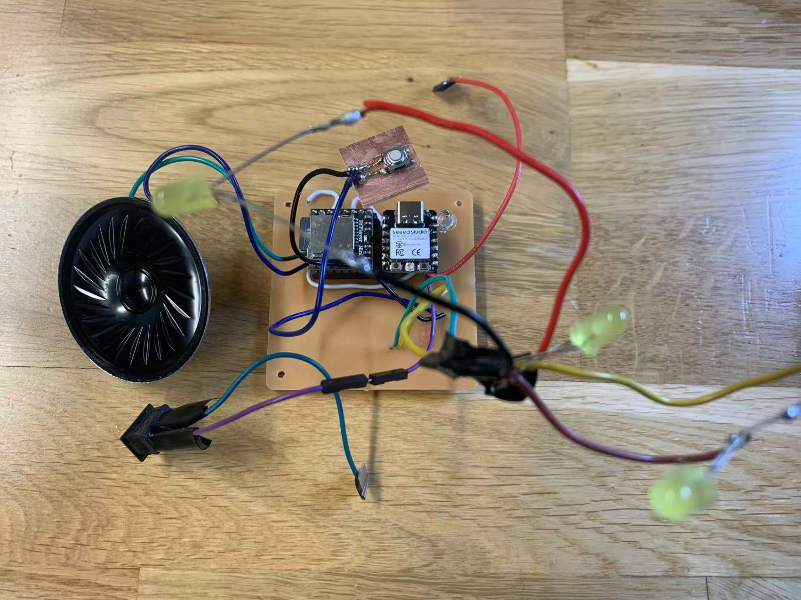
Done the plate board with the connetion and button.
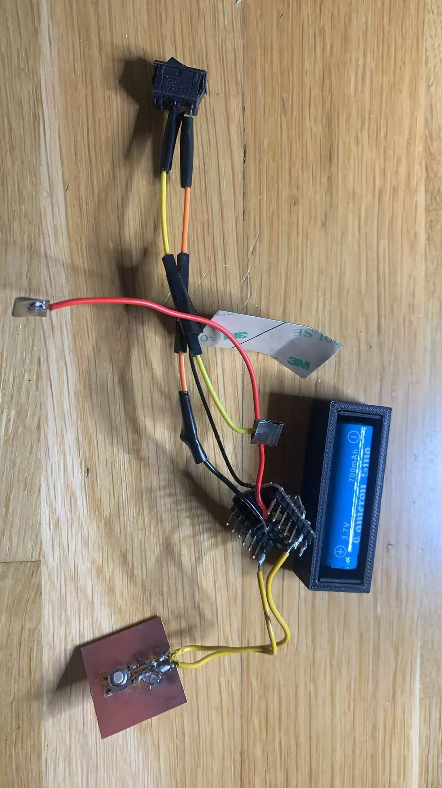
circuit of the box pcb board.
circuit of the box button pcb board.
circuit of the plate button pcb board.
05 Final Outlook
Box
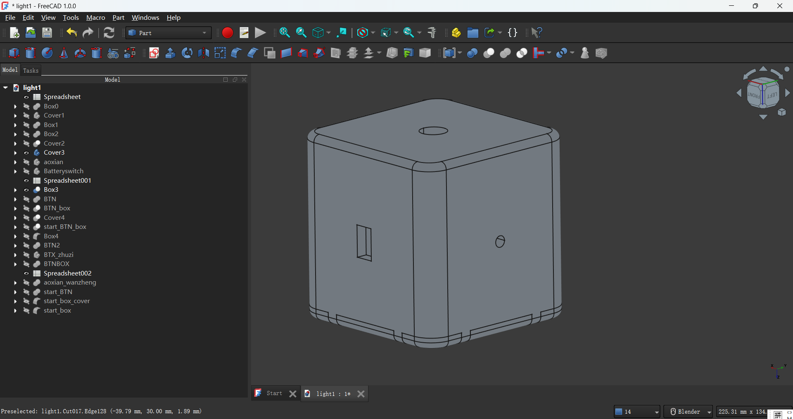
Box Button
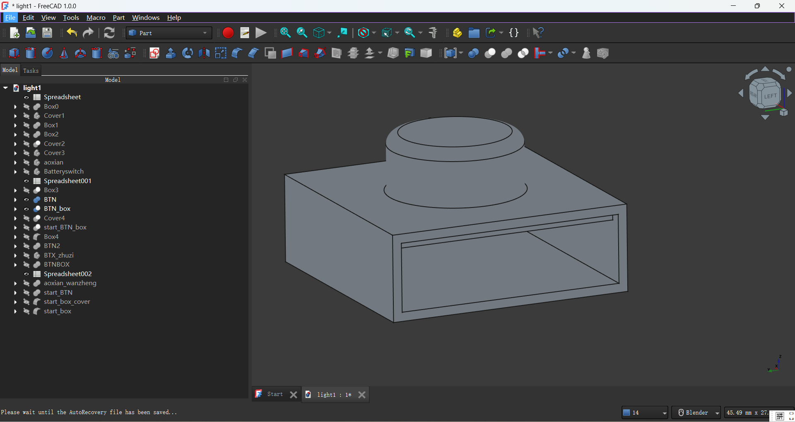
Plate
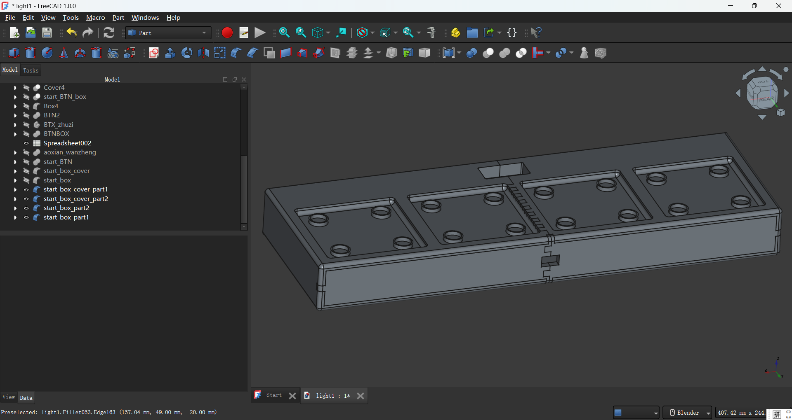
Plate button
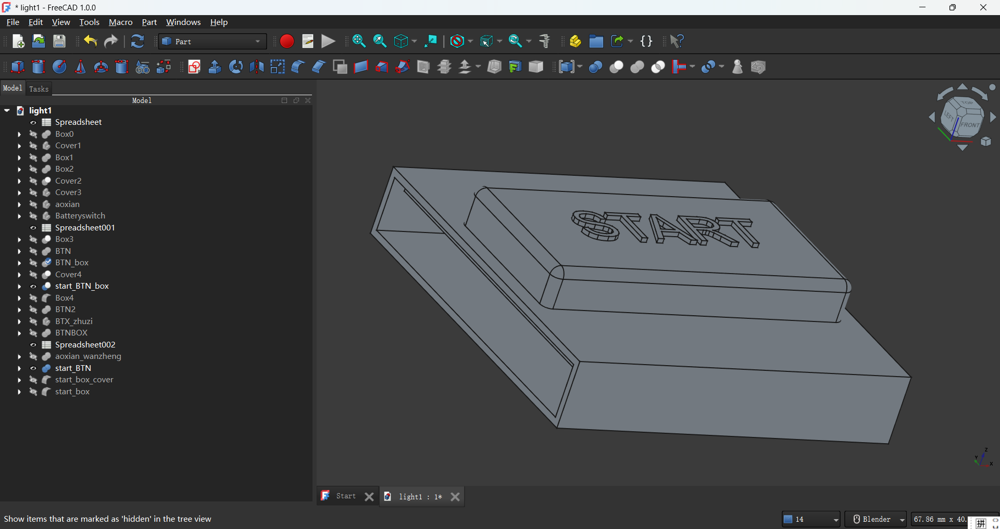
FreeCAD file of all these design.
06 Material Conclusion
PCB: 4 PCB boards, each one with a XIAO ESP32C3 board, a DFPlayer Mini(DFP0299), a speaker, 4 LEDs, a battery, a battery switch, 2 electrode metal plates(2mm), 4 pin socket tht(P2.54 VERT, 7 and 8 pin), a Dupont Wire, 12 Copper Wires, 4 nylon screws, 4 499 ohm resistors, 4 1k ohm resistors, 4 0.1 uF 100v capacitors, a 1uF 250v capacitor(DIGIKEY: 399-4674-1-ND), a Multiplexer 8:1 130ohm soic-16 (CD74HC4051M96), 4 SENSOR HALL EFFECT ANALOG SOT23W (620-1402-1-ND), a switch tactile omron B3SN-3112P. A plate connection with a ESP32C3, a switch tactile omron B3SN-3112P, a battery, a LED, a battery switch, a battery box, 2 electrode metal plates(2mm), a Dupont Wire, 4 Copper Wires.
3D print: 4 boxs, 4 boxs cover, 4 box button, a plate with 10 magnet, a plate cover, a plate button.
Plan
5.12 ~ 5.17: Finish the 3D printed battery block as experiment.
5.19 ~ 5.23: Finish the code and PCB board.
5.26 ~ 5.30: Finish the first box with PCB and 3D printing.
6.2 ~ 6.6: Finish four boxs's PCB, and 3D printing the plateform and box cover.
6.7 ~ 6.11: Check the PCB to make sure it works. Final design and print the box and plate.
Challenge and Learning
Learning: I have learned to understand the example code and datasheets on the official website, and how to use the example code to write the functionality code I want to implement. I have also learned how to create circuit diagrams using KiCad and operate the PCB milling machine and solder components independently. Additionally, I have become proficient in modeling with FreeCAD and 3D printing.
Challenges: I have experienced the entire product creation process, from concept to prototype to final product, patiently refining details and solving various small, specific problems.
Next Step
The four keys are not enough to play complete music; I need to make more keys. The size of the keys is too large; I need to make smaller keys. The shape and sound of the keys are too rigid; I need to redesign them to create softer and cuter keys, such as those made of silicone. These keys should be able to produce sound when pressed and feature new or different sound modes, such as cat meows and dog barks. I need to remove the plate setup to allow for a more flexible arrangement of the keys. Currently, the components for making the keys are too expensive (e.g., batteries, ESP32C3, etc.); I need to choose cheaper and more durable components.